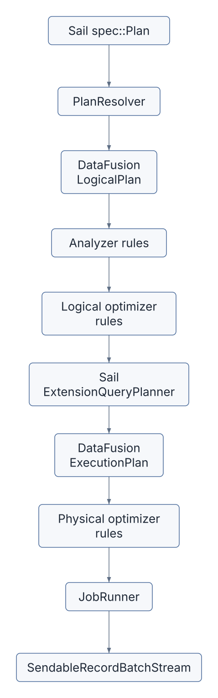
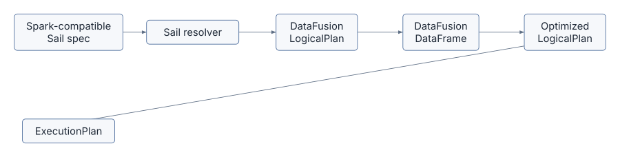
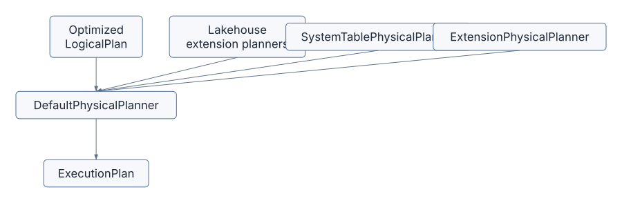
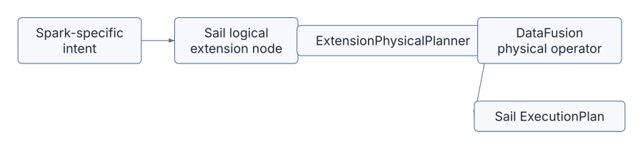
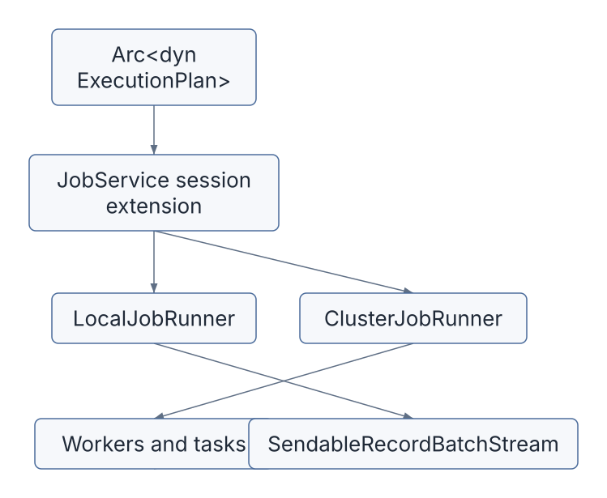

DataFusion is Sail’s execution kernel.
Spark Connect gives Sail the client protocol. PySpark gives Sail a
familiar Python API. Arrow gives Sail the in-memory format. DataFusion
gives Sail the query engine: logical plans, expressions, optimizers,
physical planning, partitioned execution, vectorized functions, file
format integration, and RecordBatch streams.
Sail is not a thin wrapper around DataFusion, though. Sail is a Spark-compatible system built on DataFusion. That distinction matters. Spark compatibility requires Spark-shaped plans, Spark function semantics, Spark catalog behavior, Spark error behavior, Spark UDF behavior, Spark streaming concepts, and a distributed execution model. DataFusion supplies the engine primitives; Sail supplies the Spark interpretation and the distributed control plane.
The question for this chapter is:
How does Sail turn Spark-compatible plans into DataFusion execution without losing Spark semantics?
Keep these references nearby:
The DataFusion introduction describes DataFusion as an extensible Rust query engine using Arrow’s in-memory format. That one sentence captures why Sail can exist: DataFusion is fast enough and flexible enough to serve as the execution core for a Spark-compatible system.
Sail currently depends on DataFusion 53.1.0 in the
workspace Cargo.toml. The exact APIs will evolve, but the
architectural ideas in this chapter are stable: session state, logical
plans, optimizer rules, physical plans, extension planners, and Arrow
batch streams.
The main files for this chapter are:
| Area | Files | DataFusion role |
|---|---|---|
| Plan resolution and execution | crates/sail-plan/src/lib.rs |
Converts Sail specs to DataFusion logical plans, optimizes them, and creates physical plans |
| Session construction | crates/sail-session/src/session_factory/server.rs |
Builds SessionConfig, SessionState,
runtime env, rules, query planner, and Sail session extensions |
| Custom query planner | crates/sail-session/src/planner.rs |
Installs extension physical planners and maps Sail logical extension nodes to physical operators |
| Session extension helper | crates/sail-common-datafusion/src/extension.rs |
Provides typed access to DataFusion session extensions from
SessionContext, SessionState, and
TaskContext |
| Logical extension nodes | crates/sail-logical-plan/src/*.rs |
Defines Sail-specific logical nodes such as range, repartition, barrier, map partitions, and streaming nodes |
| Physical extension nodes | crates/sail-physical-plan/src/*.rs |
Implements custom ExecutionPlan nodes |
| Physical optimizer rules | crates/sail-physical-optimizer/src/*.rs |
Adds or adjusts DataFusion physical optimization behavior |
| Spark function mapping | crates/sail-plan/src/function/*.rs |
Maps Spark function names and semantics to DataFusion expressions and UDFs |
| Function kernels | crates/sail-function/src/*.rs |
Implements vectorized DataFusion UDFs for Spark-compatible functions |
| Table functions | crates/sail-plan/src/function/table/range.rs |
Implements DataFusion TableFunctionImpl and
TableProvider patterns |
The short version:

DataFusion owns the core plan abstractions in the middle. Sail owns the translation into those abstractions and the custom nodes around the edges.
resolve_and_execute_planThe most compact tour of Sail’s DataFusion integration is
crates/sail-plan/src/lib.rs.
The key function is:
pub async fn resolve_and_execute_plan(
ctx: &SessionContext,
config: Arc<PlanConfig>,
plan: spec::Plan,
) -> PlanResult<(Arc<dyn ExecutionPlan>, Vec<StringifiedPlan>)>This is the bridge from Sail’s Spark-compatible plan spec to a DataFusion physical plan. It performs these steps:
PlanResolver.spec::Plan into a named DataFusion
LogicalPlan.SessionContext to execute the logical plan into
a DataFrame.SessionState and logical plan back out of the
DataFrame.In code:
let resolver = PlanResolver::new(ctx, config);
let NamedPlan { plan, fields } = resolver.resolve_named_plan(plan).await?;
let df = execute_logical_plan(ctx, plan).await?;
let (session_state, plan) = df.into_parts();
let plan = session_state.optimize(&plan)?;
let plan = session_state
.query_planner()
.create_physical_plan(&plan, &session_state)
.await?;This is a beautiful little funnel:

The DataFrame step may look surprising. Sail already has
a logical plan, so why ask the context to execute it into a DataFrame
and then split it apart? Because
SessionContext::execute_logical_plan lets DataFusion apply
its normal session machinery: analyzer behavior, catalog/function
binding, and context state. Sail then takes back the plan and drives the
rest of the pipeline.
SessionContext,
SessionState, And SessionConfigDataFusion’s session types are the engine’s ambient context:
SessionConfig stores configuration options and
extension objects.SessionState stores the config, runtime env, optimizer
rules, function registries, catalog state, and query planner.SessionContext is the user-facing handle around session
state.TaskContext is the execution-time context available to
physical operators.Sail constructs these deliberately in
crates/sail-session/src/session_factory/server.rs.
The server session factory creates a SessionContext like
this:
fn create(&mut self, info: ServerSessionInfo) -> Result<SessionContext> {
let state = self.create_session_state(&info)?;
let context = SessionContext::new_with_state(state);
context.state_ref().write().register_udaf(first_value_udaf())?;
Ok(context)
}The registration of first_value_udaf is a telling
detail. Sail does not simply enable all DataFusion defaults. It builds a
session with selected behavior and then patches in assumptions required
by its chosen optimizer rules.
The session config contains Sail services as DataFusion extensions:
SessionConfig::new()
.with_create_default_catalog_and_schema(false)
.with_information_schema(false)
.with_extension(create_table_format_registry()?)
.with_extension(Arc::new(create_catalog_manager(...)?))
.with_extension(Arc::new(ActivityTracker::new()))
.with_extension(Arc::new(JobService::new(job_runner)))
.with_extension(Arc::new(RepartitionBufferConfig::new(...)))
.with_extension(Arc::new(self.create_system_table_service(info)?))
.with_extension(Arc::new(DeltaTableCache::default()));That list is a capsule summary of Sail’s architecture:
DataFusion supplies the typed extension slot. Sail uses it as session-local dependency injection.
The helper in
crates/sail-common-datafusion/src/extension.rs makes
DataFusion extensions feel typed:
pub trait SessionExtension: Send + Sync + 'static {
fn name() -> &'static str;
}
pub trait SessionExtensionAccessor {
fn extension<T: SessionExtension>(&self) -> Result<Arc<T>>;
fn runtime_env(&self) -> Arc<RuntimeEnv>;
}Sail implements SessionExtensionAccessor for:
SessionContextSessionState&dyn SessionTaskContextThat matters because different parts of the engine are at different layers:
SessionContext or
SessionState.&dyn Session.TaskContext.The same pattern works everywhere:
let service = ctx.extension::<JobService>()?;
let registry = session_state.extension::<TableFormatRegistry>()?;
let config = task_context.extension::<RepartitionBufferConfig>()?;This is one of Sail’s cleanest Rust patterns. DataFusion gives an
untyped extension store; Sail wraps it with a trait that produces a
useful error and a typed Arc<T>.
For the extension proposal later in the book, this pattern is a key precedent. Third-party integrations will need a way to store per-session services and configuration. Sail already has the mechanism; the open question is how to make registration public, ordered, discoverable, and distributed-safe.
DataFusion lets a session install a custom query planner. Sail does
this in ServerSessionFactory::create_session_state:
let builder = SessionStateBuilder::new()
.with_config(config)
.with_runtime_env(runtime)
.with_analyzer_rules(default_analyzer_rules())
.with_optimizer_rules(default_optimizer_rules())
.with_physical_optimizer_rules(get_physical_optimizers(...))
.with_query_planner(new_query_planner());new_query_planner returns
ExtensionQueryPlanner from
crates/sail-session/src/planner.rs.
That planner is small, but strategically important:
impl QueryPlanner for ExtensionQueryPlanner {
async fn create_physical_plan(
&self,
logical_plan: &LogicalPlan,
session_state: &SessionState,
) -> Result<Arc<dyn ExecutionPlan>> {
let mut extension_planners = new_lakehouse_extension_planners();
extension_planners.push(Arc::new(SystemTablePhysicalPlanner));
extension_planners.push(Arc::new(ExtensionPhysicalPlanner));
let planner = DefaultPhysicalPlanner::with_extension_planners(extension_planners);
planner.create_physical_plan(&logical_plan, session_state).await
}
}This is Sail’s physical planning strategy:
DefaultPhysicalPlanner.DataFusion still handles normal logical plan nodes: projections, filters, aggregates, joins, sorts, limits, scans, and so on. Sail handles custom logical extension nodes that DataFusion does not know how to plan.

The extension proposal in discussion #2001 wants to generalize this seam. Today the list is hard-coded. A third-party extension API would let packages add their own extension planners without editing Sail core.
DataFusion has built-in logical plan nodes, but it also supports user-defined logical nodes. Sail uses those for Spark concepts that do not map directly to a single built-in DataFusion logical plan node.
RangeNode in
crates/sail-logical-plan/src/range.rs is the friendliest
example:
pub struct RangeNode {
range: Range,
num_partitions: usize,
schema: DFSchemaRef,
}It implements UserDefinedLogicalNodeCore:
impl UserDefinedLogicalNodeCore for RangeNode {
fn name(&self) -> &str {
"Range"
}
fn inputs(&self) -> Vec<&LogicalPlan> {
vec![]
}
fn schema(&self) -> &DFSchemaRef {
&self.schema
}
}The node carries:
It is logical because it says what should happen, not yet how to produce the Arrow batches.
Other Sail logical extension nodes include:
ExplicitRepartitionNodeBarrierNodeMapPartitionsNodeShowStringNodeSchemaPivotNodeSortWithinPartitionsNodeSparkPartitionIdNodeThese nodes are Spark compatibility pressure made visible. When Spark semantics fit DataFusion’s built-in logical plan, Sail uses DataFusion’s built-in logical plan. When they do not, Sail introduces a logical extension node and teaches the physical planner what to do with it.
ExtensionPhysicalPlanner is the function table from Sail
logical extension nodes to physical execution nodes.
For RangeNode, it builds RangeExec:
if let Some(node) = node.as_any().downcast_ref::<RangeNode>() {
let schema = UserDefinedLogicalNode::schema(node).inner().clone();
let projection = (0..schema.fields().len()).collect();
Arc::new(RangeExec::try_new(
node.range().clone(),
node.num_partitions(),
schema,
projection,
)?)
}For MapPartitionsNode, it uses the physical input and
wraps it in MapPartitionsExec:
let [input] = physical_inputs else {
return internal_err!("MapPartitionsExec requires exactly one physical input");
};
Arc::new(MapPartitionsExec::new(
input.clone(),
node.udf().clone(),
UserDefinedLogicalNode::schema(node).inner().clone(),
))For SortWithinPartitionsNode, it does not need a custom
physical operator. It uses DataFusion’s SortExec with
preserve_partitioning:
let sort = SortExec::new(ordering, input.clone())
.with_fetch(node.fetch())
.with_preserve_partitioning(true);
Arc::new(sort)This is the architectural sweet spot:

The result is less code than a from-scratch engine, but more semantic control than a simple SQL translation layer.
ExecutionPlanDataFusion physical operators implement ExecutionPlan.
The most important method is:
fn execute(
&self,
partition: usize,
context: Arc<TaskContext>,
) -> Result<SendableRecordBatchStream>You saw this in Chapter 5, but now we can place it in DataFusion’s
architecture. An ExecutionPlan describes a partitioned
physical computation. It knows its schema, children, properties,
partitioning, boundedness, and how to execute one partition.
Sail custom physical nodes follow the same contract.
RangeExec:
RecordBatchStreamAdapter.ExplicitRepartitionExec:
RecordBatch values to receivers.ShuffleWriteExec and ShuffleReadExec in
sail-execution also implement the same contract, which is
why the distributed runtime can insert them into a DataFusion physical
plan. DataFusion’s abstraction is local and partitioned; Sail’s
distributed planner can split it into stages and reconnect it with
shuffle nodes.
DataFusion physical plans carry PlanProperties. Sail
uses those properties carefully because distributed execution depends on
them.
For example, RangeExec creates:
PlanProperties::new(
EquivalenceProperties::new(projected_schema.clone()),
Partitioning::RoundRobinBatch(num_partitions),
EmissionType::Both,
Boundedness::Bounded,
)That tells the optimizer and scheduler:
ShuffleWriteExec uses different properties. It returns
an empty stream from execute, but the side effect is
writing shuffle data. Its properties reflect the input partition count
rather than the shuffle output count, because each input partition
execution writes many shuffle output streams.
These details matter. A distributed engine cannot safely insert exchanges, coalesce partitions, reorder joins, or execute streaming plans unless physical operators accurately describe themselves.
Sail installs analyzer and optimizer rules in
crates/sail-session/src/optimizer.rs:
pub fn default_analyzer_rules() -> Vec<Arc<dyn AnalyzerRule + Send + Sync>> {
sail_logical_optimizer::default_analyzer_rules()
}
pub fn default_optimizer_rules() -> Vec<Arc<dyn OptimizerRule + Send + Sync>> {
let rules = sail_logical_optimizer::default_optimizer_rules();
let mut custom = sail_plan_lakehouse::lakehouse_optimizer_rules();
custom.extend(
rules
.into_iter()
.filter(|r| r.name() != "push_down_leaf_projections"),
);
custom
}Two things are happening here:
sail_logical_optimizer.The test asserts that expand_row_level_op runs first.
That is a Spark and lakehouse semantic requirement: row-level operations
such as MERGE/DELETE/UPDATE must be expanded before generic optimizers
obscure the structure needed for correct planning.
This is an important DataFusion lesson: optimizer rule order is part of engine semantics. For extensions, “add my optimizer rule” is not sufficient. The API must answer where it runs, what it can assume, and which rules it must precede or follow.
Sail also customizes physical optimization in
crates/sail-physical-optimizer/src/lib.rs.
The rule list includes DataFusion’s standard physical optimizer rules in the same order, then adds Sail-specific rules:
rules.push(Arc::new(RewriteExplicitRepartition::new()));
rules.push(Arc::new(RewriteCollectLeftHashJoin::new()));
rules.push(Arc::new(EnforceBarrierPartitioning::new()));
rules.push(Arc::new(SanityCheckPlan::new()));The test compares Sail’s rule order with DataFusion’s default physical optimizer to ensure Sail does not accidentally reorder DataFusion defaults.
RewriteExplicitRepartition is a good example. During
physical planning, Sail creates an ExplicitRepartitionExec
placeholder. Later, the physical optimizer rewrites it:
RepartitionExecCoalescePartitionsExecCoalesceExecWhy not decide all of that immediately in the physical planner? Because the optimizer sees the larger physical plan and can make a more context-aware choice. This keeps planning declarative and lets rewrite rules simplify the physical plan after DataFusion has done its own work.
EnforceBarrierPartitioning is another
distributed-execution hint. It rewrites BarrierExec
preconditions so all precondition partitions complete before the actual
plan begins. That behavior matters for Spark-like commands where one
operation must finish globally before another starts.
Spark has a large function surface. DataFusion has its own function surface. Sail sits in between.
The function registry in
crates/sail-plan/src/function/mod.rs collects built-in
scalar, generator, aggregate, table, and window functions:
lazy_static! {
pub static ref BUILT_IN_SCALAR_FUNCTIONS: HashMap<&'static str, ScalarFunction> =
HashMap::from_iter(scalar::list_built_in_scalar_functions());
pub static ref BUILT_IN_GENERATOR_FUNCTIONS: HashMap<&'static str, ScalarFunction> =
HashMap::from_iter(generator::list_built_in_generator_functions());
pub static ref BUILT_IN_TABLE_FUNCTIONS: HashMap<&'static str, Arc<TableFunction>> =
HashMap::from_iter(table::list_built_in_table_functions());
}The type alias for scalar planning functions is:
pub(crate) type ScalarFunction =
Arc<dyn Fn(ScalarFunctionInput) -> PlanResult<expr::Expr> + Send + Sync>;This means Sail’s “function registry” is not only a map from name to UDF. It is a map from Spark function name to a small planning function that can:
For simple cases, ScalarFunctionBuilder::udf wraps a
ScalarUDFImpl:
pub fn udf<F>(f: F) -> ScalarFunction
where
F: ScalarUDFImpl + Send + Sync + 'static,
{
let func = ScalarUDF::from(f);
Arc::new(move |input| Ok(func.call(input.arguments)))
}For more complex Spark functions, Sail uses custom builders that produce DataFusion expressions directly. This planning-time layer is one of the main places Spark semantics are preserved.
The DataFusion UDF documentation explains that scalar UDFs are vectorized: they receive Arrow arrays and return Arrow arrays. Sail’s function kernels follow that model.
SparkMask in
crates/sail-function/src/scalar/string/spark_mask.rs
implements ScalarUDFImpl:
impl ScalarUDFImpl for SparkMask {
fn name(&self) -> &str {
"spark_mask"
}
fn signature(&self) -> &Signature {
&self.signature
}
fn return_type(&self, arg_types: &[DataType]) -> Result<DataType> {
...
}
fn invoke_with_args(&self, args: ScalarFunctionArgs) -> Result<ColumnarValue> {
...
}
}The return type function is a planning/type-checking hook. The
invoke_with_args function is the execution hook. It
receives ColumnarValue arguments, which may be scalar
values or Arrow arrays.
The Explode function in
crates/sail-function/src/scalar/explode.rs shows a
different pattern:
fn invoke_with_args(&self, _: ScalarFunctionArgs) -> Result<ColumnarValue> {
plan_err!(
"{} should be rewritten during logical plan analysis",
self.name()
)
}explode is represented like a function for analysis, but
it should not execute as a normal scalar UDF. It must be rewritten into
a plan shape that can expand rows. This is a good example of Spark
semantics not fitting a plain expression kernel.
DataFusion table functions return TableProvider objects.
Sail’s range table function in
crates/sail-plan/src/function/table/range.rs is a small
complete example.
RangeTableFunction implements
TableFunctionImpl:
impl TableFunctionImpl for RangeTableFunction {
fn call(&self, args: &[Expr]) -> Result<Arc<dyn TableProvider>> {
...
let node = RangeNode::try_new("id".to_string(), start, end, step, num_partitions)?;
Ok(Arc::new(RangeTableProvider {
node: Arc::new(node),
}))
}
}The provider exposes both a logical and physical path:
fn get_logical_plan(&self) -> Option<Cow<'_, LogicalPlan>> {
Some(Cow::Owned(LogicalPlan::Extension(
logical_plan::Extension {
node: self.node.clone(),
},
)))
}
async fn scan(...) -> Result<Arc<dyn ExecutionPlan>> {
Ok(Arc::new(RangeExec::try_new(...)?))
}This is a useful pattern for extension authors:
ExecutionPlan.Range is simple, but the shape generalizes to custom table-valued functions, specialized data sources, and extension-backed virtual tables.
DataFusion’s ExecutionPlan API is partitioned and
asynchronous, but DataFusion itself is not Sail’s whole distributed
runtime. Sail builds a distributed layer around DataFusion physical
plans.
The boundary is visible in
ServerSessionFactory::create_job_runner:
let job_runner: Box<dyn JobRunner> = match self.config.mode {
ExecutionMode::Local => Box::new(LocalJobRunner::new()),
ExecutionMode::LocalCluster => Box::new(ClusterJobRunner::new(...)),
ExecutionMode::KubernetesCluster => Box::new(ClusterJobRunner::new(...)),
};JobService is placed in SessionConfig as an
extension. Later, Spark Connect and Flight SQL can retrieve it from the
session and execute a physical plan.
This separation is one of Sail’s strongest design choices:

The next chapters will zoom into that distributed layer. For now, remember that DataFusion’s physical plan is the unit Sail distributes.
Sail’s DataFusion integration repeatedly follows this pattern:
ExecutionPlan nodes.Some examples:
| Spark/Sail concept | DataFusion integration |
|---|---|
| Spark range | RangeNode -> RangeExec |
| Spark repartition/coalesce | ExplicitRepartitionNode ->
ExplicitRepartitionExec -> physical optimizer
rewrite |
| Sort within partitions | logical extension -> DataFusion SortExec with
preserved partitioning |
| Spark built-in functions | planning registry -> DataFusion expressions or Sail
ScalarUDFImpl |
| Spark generator functions | analyzed as functions, then rewritten into plan structure |
| Catalog commands | logical command nodes -> CatalogCommandExec |
| Lakehouse row-level operations | lakehouse optimizer rules before generic optimizer rules |
| System tables | system table extension planner and TableProvider |
That table is the heart of the chapter. Sail is not asking DataFusion to become Spark. Sail is using DataFusion as a powerful substrate and adding Spark compatibility at well-defined seams.
The extensions proposal in discussion #2001 is largely about opening the seams this chapter has exposed.
Today, Sail has internal extension points:
with_extension,SessionExtensionAccessor,DefaultPhysicalPlanner::with_extension_planners,UserDefinedLogicalNodeCore,ExecutionPlan nodes,But those points are mostly wired inside Sail. A third-party extension API would need to make them explicit and safe.
For example, a Sedona-style spatial extension might need to register:
ST_Area,
ST_Intersects, ST_GeomFromWKB,ST_Union_Aggr,DataFusion already has many of the underlying concepts. Sail’s challenge is to wrap them in an API that respects Spark compatibility and distributed execution.
rangeFollow Spark’s range from function to execution:
crates/sail-plan/src/function/table/mod.rs.range registered as a built-in table function.crates/sail-plan/src/function/table/range.rs.RangeTableFunction::call.RangeNode::try_new in
crates/sail-logical-plan/src/range.rs.ExtensionPhysicalPlanner in
crates/sail-session/src/planner.rs.RangeNode downcast.RangeExec::try_new and
RangeExec::execute.SendableRecordBatchStream.You have now traced a Spark-compatible table function through DataFusion’s logical and physical extension APIs.
repartitionFollow explicit repartitioning:
crates/sail-logical-plan/src/repartition.rs.ExplicitRepartitionNode.ExtensionPhysicalPlanner.ExplicitRepartitionNode case.plan_explicit_partitioning.crates/sail-physical-plan/src/repartition.rs.ExplicitRepartitionExec.crates/sail-physical-optimizer/src/explicit_repartition.rs.This trace teaches the difference between preserving user intent and choosing the final execution shape.
Pick a function such as mask:
crates/sail-plan/src/function/scalar/mod.rs.crates/sail-plan/src/function/scalar/string.rs.SparkMask.crates/sail-function/src/scalar/string/spark_mask.rs.return_type and
invoke_with_args.This is the pattern most third-party scalar functions will want to follow.
DataFusion gives Sail its query engine, but Sail decides how Spark semantics enter and leave that engine.
The central pipeline is: Sail spec -> DataFusion logical plan
-> logical optimization -> Sail/DataFusion physical planning ->
physical optimization -> ExecutionPlan -> Arrow
RecordBatch stream.
Sail customizes DataFusion through session extensions, analyzer and optimizer rules, function planning registries, extension logical nodes, extension physical planners, custom physical operators, and physical optimizer rules. Those are the same seams the extension architecture must eventually expose to third-party packages.
The next chapter moves from “how does Sail get a physical plan?” to “how does Sail split that physical plan into a distributed job graph?”